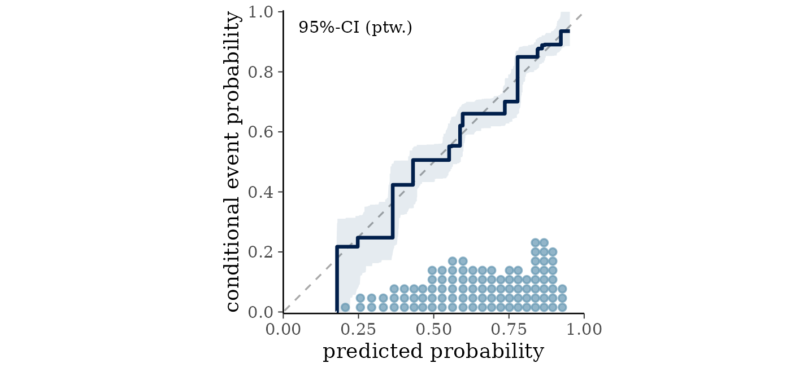
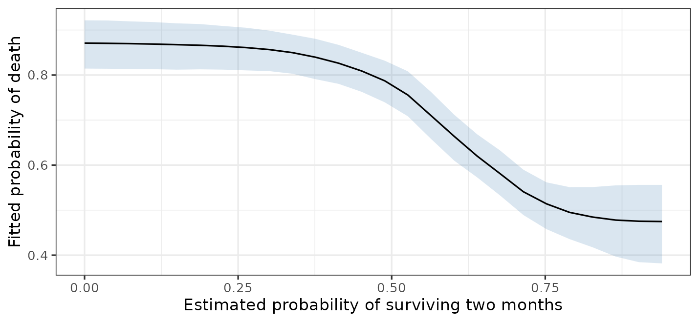

Introduction
bartisan fits Bayesian additive regression trees (BART)
using the same interface as glm(). We supply a formula, a
data frame, and a family, and the model estimates the relationship
between the predictors and the outcome without anything being said about
what shape that relationship takes. Nonlinearity and interactions are
found rather than specified.
In this guide we will work through a complete analysis. First we’ll fit a model and check both that the sampler converged and that the fit describes the data. Next we’ll see which predictors the forest uses, read the effects off it, and predict for new observations. Finally we’ll compare two models and set out what the fit does not do. The guide assumes a reader comfortable with regression and assumes nothing about machine learning or Bayesian methods.
The main thing to take from it is that the defaults are meant to be used. The priors, the number of trees, and the sampler settings are chosen to work across a wide range of problems, and tuning them is rarely where the gains are. Almost everything below is a single function call with no arguments beyond the formula and the data.
Most sections point to a vignette that covers the same ground in more depth.
Parallelization and Progress Bars
Using parallelization can speed up fitting bartisan()
models with multiple chains. Parallelization is controlled through the
future
package. To request multi-session evaluation, one can simply call the
following:
future::plan("multisession")The future.apply package must also be installed (installing it also installs future).
Some operations in bartisan can be take some time, and one can request a progress bar using the progressr package. One can request progress bars globally for all functions that produce them using the following:
progressr::handlers(global = TRUE)To request a progress bar for a single call, wrap the function
evaluation in progressr::with_progress(), e.g.,
progressr::with_progress(
bartisan(y ~ ., data = d)
)The Data
rhc records a random 1500 of the 5735 patients in the
SUPPORT study and whether each received right heart catheterization, a
monitoring procedure, within a day of arriving in intensive care (Connors et al.
1996). The question the study asked is whether the procedure
helps or harms.
data(rhc)
str(rhc)
#> 'data.frame': 1500 obs. of 16 variables:
#> $ rhc : int 0 0 0 0 0 1 0 0 0 1 ...
#> $ death : int 1 0 0 1 0 0 1 1 0 1 ...
#> $ days : int 37 235 189 13 202 203 663 15 239 22 ...
#> $ age : num 75.3 55 34.4 42.2 41.4 ...
#> $ sex : Factor w/ 2 levels "female","male": 1 2 2 1 2 2 2 2 2 2 ...
#> $ race : Factor w/ 3 levels "white","black",..: 1 1 1 1 2 1 1 1 1 1 ...
#> $ edu : num 9 14 15 16 11 ...
#> $ aps : int 48 29 21 55 60 68 26 89 59 105 ...
#> $ meanbp: num 55 67 66 77 53 47 63 44 50 33 ...
#> $ resp : num 26 10 30 40 12 40 22 0 33 44 ...
#> $ hema : num 26.3 29 23.8 53 31 ...
#> $ pafi : num 157 149 202 171 390 ...
#> $ paco2 : num 30 45 37 25 31 28 40 39 36 31 ...
#> $ crea : num 1.7 1 0.5 1.9 15 ...
#> $ surv2m: num 0.441 0.339 0.846 0.672 0.777 ...
#> $ card : Factor w/ 2 levels "no","yes": 1 1 1 1 1 1 2 2 1 1 ...The outcome comes in two forms. death is whether the
patient died during follow-up, and days is how long that
took. This vignette uses the binary form;
vignette("survival") uses the other.
The remaining variables are the patient’s age, sex, race and years of
education, seven physiological measurements taken on the first day,
whether cardiovascular disease was among the diagnoses, and
surv2m, the study’s own estimate of the patient’s chance of
surviving two months. All were recorded before catheterization.
Fitting the Model
To fit the model, we simply call bartisan::bartisan()
with the same model formula one would use for glm() or any
other standard model-fitting function, additionally supplying the
dataset to data and the response family to
family. Because BART involves random processes, we must
also set a seed using set.seed() to ensure reproducibility
(though not the kind does not matter).
set.seed(2026)
fit <- bartisan(
death ~ rhc + age + sex + race + edu + aps + meanbp + resp + hema +
pafi + paco2 + crea + surv2m + card,
data = rhc, family = binomial()
)
fit
#> Generalized BART
#>
#> Call:
#> bartisan(formula = death ~ rhc + age + sex + race + edu + aps +
#> meanbp + resp + hema + pafi + paco2 + crea + surv2m + card,
#> data = rhc, family = binomial())
#>
#> Family: "binomial" with the "logit" link
#> Observations: 1500
#> Structure: 1 forest of 50 trees, soft decision rules
#> Draws: 800 kept after 200 warmupSetting family = binomial() says the outcome is binary,
exactly as in glm(). The family may be omitted, in which
case it is read off the outcome and reported; naming it is clearer and
silences the message.
The fit uses the default single chain, which is enough for the
estimates and keeps this guide brief. In a real analysis we would run
several chains, and possibly change the number of burn-in and retained
draws, before reading any results; vignette("diagnostics")
explains how to set these fit controls and how to check that they were
enough.
Choosing a family is the one modeling decision that usually matters
more than any sampler setting. vignette("families") covers
the choice, and vignette("survival") covers censored
outcomes such as this one’s days.
The other decision worth knowing about is the shape of the decision
rules. By default a rule is soft, so an observation near a split
contributes to both sides of it and the fitted function comes out smooth
rather than piecewise constant; the gate argument of
bartisan_control() switches to the hard rules of standard
BART, which fit faster but less accurately.
vignette("implementation") has the comparison.
Checking the Model
In a Bayesian analysis, one must first determine whether the sampler converged before moving forward with a model’s results. Separately, one should assess whether the model is a good fit to the data.
Convergence
diagnose() computes the convergence and mixing
statistics, applies the conventional thresholds, and says what to change
about whichever of them fall short.
diagnose(fit)
#> Convergence and mixing
#>
#> quantity rhat rhat_late ess_bulk ess_tail
#> loglik 1.090 1.062 18 89
#> splits.eta 1.004 1.015 109 216
#> eta.eta (average over observations) 1.006 1.006 550 663
#> eta.eta (worst 5% of observations) 1.106 1.107 15 128
#>
#> ✖ Only one chain, so R-hat can only compare it with itself; set `chains = 4`
#> ✖ R-hat is above 1.01 for loglik
#> ✖ That R-hat rests on only 18 effective draws, where a single chain averages
#> 1.054 even when its two halves agree
#> ℹ A longer warmup is not the fix: R-hat stays high on the second half of the
#> draws alone as well
#> ✔ The chains agree about the size of the forest
#> ✖ Bulk ESS is 15 for eta.eta (worst 5% of observations), below 400
#> ✖ Tail ESS is 89 for loglik, below 400
#> ℹ The chains disagree about individual observations and agree about their
#> average (R-hat 1.01, 550 effective draws)
#> ℹ Per-draw efficiency is lowest for eta.eta (worst 5% of observations), which
#> carries 1.8 effective draws per hundred kept
#>
#> What to do
#>
#> • Refit with `chains = 4`. R-hat compares chains against each other, and one
#> chain can only be compared with itself, so nothing below is reliable until
#> there are several. With *future* installed the chains run in parallel.
#> • Raise `num_draws`, which was `800`. R-hat is above the threshold for a
#> quantity that carries too few effective draws for the threshold to mean
#> anything: with this many chains it would sit about where it does even if the
#> chains agreed exactly, as the check above reports. A larger effective sample
#> size makes it readable, and that grows with the total number of draws; using
#> fewer chains lowers the bar as well, since R-hat's null rises with the number
#> of chains being compared.
#> • If that does not settle it, reduce `num_trees`, which was `50`. A smaller
#> forest has fewer ways to represent the same fit, so the sampler has less room
#> to move between them.
#> • Then check the family. A likelihood that fits the data badly can give a
#> posterior with no single place to be; `bayesplot::pp_check()` is the
#> diagnostic.
#> • Note that the chains disagree about the fitted values of individual
#> observations and not about their average, which is the usual shape of this in
#> a forest. What that means for an estimand cannot be read off this table
#> either way, since an estimand is a contrast and a contrast can mix badly
#> where the function it contrasts mixes well. Compute it: `diagnose()` takes
#> the output of `estimate_effect()`, and `posterior::as_draws()` hands the
#> draws to `posterior::summarise_draws()` for anything else.Because the fit has one chain, the first line of the report says to
refit with several, and in a real analysis we would do that before
reading the rest. rhat compares variation between chains to
variation within them; with one chain it compares the chain’s two
halves, which detects drift but cannot detect chains that have settled
in different places. rhat_late is the same statistic on the
second half of the draws alone, which distinguishes a warmup that ended
too early from chains that have each settled somewhere different.
ess_bulk and ess_tail are effective sample
sizes, and count how many independent draws the correlated ones are
worth, in the middle of the distribution and in the tails.
Read the rows that correspond to the quantities being reported.
eta.eta is the fitted function and appears twice, once
averaged over the observations and once over the worst 5% of them; the
second governs a prediction for one observation. Forests mix slowly on
their fitted values, so a figure above 1.01 on the worst-5% row is
ordinary rather than alarming; vignette("diagnostics")
explains what to do about it and when to worry.
No row here governs an effect, though, and the average row in
particular should not be read as if it did. An effect is a contrast, and
a contrast can mix badly where the function it is a contrast of mixes
well. diagnose() takes the estimand itself when there is
one to take:
diagnose(estimate_effect(fit, treat = "rhc"))
#> Convergence and mixing
#>
#> quantity rhat rhat_late ess_bulk ess_tail
#> Y[1] - Y[0] 1.022 1.009 130 216
#> Y[0] 1.010 1.004 334 605
#> Y[1] 1.013 1.007 191 249
#>
#> ✖ Only one chain, so R-hat can only compare it with itself; set `chains = 4`
#> ✖ R-hat is above 1.01 for Y[1] - Y[0]
#> ✖ Warmup was too short: R-hat is fine on the second half of the draws alone, as
#> it would be with more `num_burn`
#> ✖ Bulk ESS is 130 for Y[1] - Y[0], below 400
#> ✖ Tail ESS is 216 for Y[1] - Y[0], below 400
#>
#> What to do
#>
#> • Refit with `chains = 4`. R-hat compares chains against each other, and one
#> chain can only be compared with itself, so nothing below is reliable until
#> there are several. With *future* installed the chains run in parallel.
#> • Raise `num_burn`, which was `200`. R-hat is already acceptable on the second
#> half of the retained draws on their own, as it would be after a longer
#> warmup, so it is the early draws the chains disagree about.The contrast carries far fewer effective draws than the average
fitted value in the table above, which the fit’s own table could not
have shown, since the other predictors keep the fitted function moving
even where the contrast mixes slowly. Under the default splitting prior
there is a further way this can happen: rhc gets no rule in
some draws, which puts the contrast at exactly zero and can hold it
there for a long run. diagnose() notes that atom when it
finds one, and vignette("causal") covers the settings that
remove it when an effect is being reported.
The table is in diagnose(fit)$table when the numbers are
wanted rather than the report.
Fit
The question worth asking of a binary outcome is whether the predicted probabilities mean what they say: among the patients the model gave a 30% chance of dying, did about 30% die? A calibration plot answers it.
bayesplot::pp_check(fit, type = "loo_calibration")
The line should follow the diagonal, and here it does across the whole range. Each patient is judged against a probability estimated without them, so this is not the optimistic in-sample reading.
The default pp_check() compares the distribution of
simulated outcomes with the observed distribution, which is the check to
reach for when the outcome is continuous; with two values to get right
it finds nothing here. vignette("diagnostics") covers what
a departure from the diagonal looks like and what else to check.
Variable Importance
A bartisan() fit produces no model coefficients; to see
which covariates played the biggest role in the fit, we can use
variable_importance() on its output. This produces
statistics about the use of each predictor in the trees.
variable_importance(fit)
#> Variable importance
#>
#> variable prop_used prop_splits splits
#> surv2m 1.000 0.211 15.6
#> age 1.000 0.182 13.6
#> rhc 0.995 0.098 7.3
#> pafi 0.995 0.080 6.0
#> paco2 0.991 0.105 7.9
#> aps 0.764 0.062 4.7
#> edu 0.684 0.053 4.0
#> resp 0.667 0.059 4.4
#> race 0.637 0.031 2.3
#> card 0.621 0.025 1.8
#> hema 0.574 0.033 2.5
#> meanbp 0.555 0.022 1.7
#> crea 0.514 0.018 1.4
#> sex 0.479 0.020 1.5
#>
#> ℹ splits_lower and splits_upper hold the 95% interval, not shown above.splits is the average number of splitting rules the
forest spends on each predictor per draw, and prop_used is
the proportion of draws in which the predictor received any rule at
all.
surv2m takes the most rules, which is unsurprising: it
is a prognostic score built to predict survival. age
follows. At the bottom, sex, race and several
of the physiological measurements are used in only about half of the
draws, which says the model can often do without them.
It’s important to remember that usage is not effect size: a predictor can be split on constantly and still move the prediction very little, and the comparisons in the next section are the better guide to that. Also, when predictors are correlated, the usage distributes among them more or less arbitrarily.
vignette("importance") covers variable importance and
selection, including how to tell whether a difference in this table
means anything.
Interpreting the Fit
A forest has no table of coefficients to read, so a fit is interpreted by putting questions to it: what happens to the prediction when a predictor is changed, and what shape does the prediction trace as that predictor varies. The functions below answer versions of that question, and they differ in what they average over rather than in what they are asking.
A Table of Average Comparisons
marginaleffects::avg_comparisons() is the closest thing
to a table of regression slopes. For each predictor in turn it changes
that predictor, leaves the others as they are, predicts every patient
twice, and averages the difference over the sample.
marginaleffects::avg_comparisons(fit)
#>
#> Term Contrast Estimate 2.5 % 97.5 %
#> age +1 0.003208 1.60e-03 0.004945
#> aps +1 0.001103 0.00e+00 0.002956
#> card yes - no 0.013003 -5.58e-03 0.081843
#> crea +1 0.000000 -1.24e-02 0.028496
#> edu +1 -0.002408 -1.82e-02 0.002613
#> hema +1 0.000000 -3.53e-03 0.002072
#> meanbp +1 0.000000 -2.79e-04 0.001771
#> paco2 +1 0.003430 3.38e-04 0.006562
#> pafi +1 0.000243 1.34e-05 0.000462
#> race black - white 0.000000 -4.01e-02 0.054990
#> race other - white 0.000000 -2.37e-02 0.097147
#> resp +1 0.000146 -1.44e-03 0.002950
#> rhc 1 - 0 0.064924 1.01e-02 0.115394
#> sex male - female 0.000000 -1.84e-02 0.052023
#> surv2m +1 -0.177240 -2.68e-01 -0.101514
#>
#> Type: responseContrast says what change was made.1 For a categorical
predictor it is a difference between two levels, and for a numeric one
it is an increase of one unit, which is a default rather than anything
the data suggested. The comparisons are on the probability scale, so
rhc reads as an increase of about six and a half percentage
points in the probability of death and age as three tenths
of a point per year of age. A logistic regression would report each of
these as one slope on the log-odds scale; these are averages over the
sample of a quantity the model allows to differ from patient to
patient.
Several rows are exactly zero rather than merely small, which is
worth knowing about. The default splitting prior can leave a predictor
out of the forest altogether in a given draw, and in such a draw every
comparison involving it is exactly zero, so the posterior has a point
mass there. Where that mass covers the middle of the posterior the
median falls inside it and the estimate prints as exactly zero, as it
has for the predictors at the bottom of the importance table. The same
mass is why the lower bound for aps is exactly zero rather
than merely close to it.
The one-unit default deserves a second look whenever a predictor does
not span a unit. surv2m is a probability, so an increase of
one is wider than its whole observed range, and the model holds its
prediction flat past the edge of that range rather than continuing any
trend. Asking instead for a change the data contains gives a larger
answer:
marginaleffects::avg_comparisons(fit, variables = list(surv2m = "iqr"))
#>
#> Estimate 2.5 % 97.5 %
#> -0.285 -0.362 -0.214
#>
#> Term: surv2m
#> Type: response
#> Comparison: Q3 - Q1Moving a patient from the first quartile of the prognostic score to the third lowers the predicted probability of death by about .29, against the .18 the one-unit contrast reported.
The Shape of a Relationship
One number for a predictor hides the shape of the relationship behind
it, and the two surv2m contrasts show it happening when the
shape matters: the answer depends on which change is asked about.
Plotting the fit against one predictor shows the whole curve, averaging
over the other predictors at each value.
plot(fit, ~ surv2m) +
ggplot2::labs(x = "Estimated probability of surviving two months",
y = "Fitted probability of death")
The fitted probability of death falls from close to .9 to about .5 as the prognostic score rises, and the fall is not a straight line, which is why the two contrasts above disagree about its size. A logistic regression reports one slope on the log-odds scale for the whole range. Nothing had to be specified to find the shape.
The band is a credible interval on the average prediction at
each value, not on any one patient’s, and it widens at the top where few
patients were that healthy. partial_dependence() returns
the same numbers without drawing them, and
marginaleffects::plot_predictions() is the one to reach for
when the grid or what is conditioned on needs more control.
vignette("effects") covers effects, curves, and
interactions.
The Effect of a Treatment
rhc has a row in the table above, so in one sense its
effect has already been reported. estimate_effect() asks
the same question in the vocabulary of a causal analysis: it takes the
treatment as an argument rather than as one predictor among many, it
names the estimand being averaged, and it reports the two potential
outcomes the contrast is a difference of.
eff <- estimate_effect(fit, treat = "rhc")
eff
#> Average treatment effect (difference)
#>
#> Treatment: `rhc`
#> Averaged over 1500 units
#>
#> contrast estimate lower upper n
#> Y[1] - Y[0] 0.0643 0.0101 0.115 1500
#>
#> Average potential outcomes
#>
#> quantity estimate lower upper
#> Y[0] 0.630 0.600 0.656
#> Y[1] 0.694 0.654 0.730
#>
#> ℹ estimate is the posterior mean; lower and upper bound the 95% equal-tailed
#> credible interval.
#> ℹ Y[a] is the average response with `rhc` set to "a".Catheterization is associated with an increase of about six
percentage points in the probability of death. The interval runs from
about one point to roughly eleven, so the direction is reasonably clear
and the size is not. The estimate differs a little from the
rhc row of the comparisons table because it is the
posterior mean of the same draws rather than their median.
Because the outcome is binary, this is a difference in probability, which is interpretable without reference to the model, and it is usually the number to report. The two probabilities it is a difference of are printed below it: about 63% of patients would be expected to die without catheterization and 69% with it, averaging over the covariates as they actually occur in this sample.
The treatment has to be categorical, since the contrast is taken
between its levels. The effect of a continuous treatment is a slope or a
dose-response curve instead, and estimate_effect() says so
and names the functions that produce one.
The defaults are not necessarily the best settings for estimating a
causal effect. A sparsity prior that can drop a predictor, which put
several rows of the comparisons table at exactly zero, is reasonable for
prediction and poor for a treatment whose effect is being reported. More
specialized methods, such as Bayesian causal forests (BCF) and BART
without a sparsity-inducing prior, are described in
vignette("causal"), which also covers what has to be true
of the data before any of this can be read as an effect of the
procedure.
Predicting New Observations
predict() returns the posterior mean prediction.
new_patient <- rhc[1, ]
new_patient$rhc <- 1
predict(fit, newdata = new_patient)
#> [1] 0.8371For a prediction with an interval, use
marginaleffects::predictions(), which reports the posterior
median rather than the mean predict() reports:
marginaleffects::predictions(fit, newdata = new_patient)
#>
#> Estimate 2.5 % 97.5 %
#> 0.843 0.749 0.908
#>
#> Type: responseThis describes the probability that a patient with these characteristics dies. It is an interval for that probability, not a statement about which way any individual patient will go: the outcome itself is either 0 or 1, and a probability of .7 is entirely compatible with survival.
Comparing Models
Approximate leave-one-out cross-validation estimates how well a model predicts data it has not seen.
library(loo)
loo(fit)
#>
#> Computed from 800 by 1500 log-likelihood matrix.
#>
#> Estimate SE
#> elpd_loo -848.3 17.4
#> p_loo 32.2 0.9
#> looic 1696.7 34.7
#> ------
#> MCSE of elpd_loo is 0.9.
#> MCSE and ESS estimates assume MCMC draws (r_eff in [0.0, 0.4]).
#>
#> All Pareto k estimates are good (k < 0.66).
#> See help('pareto-k-diagnostic') for details.elpd_loo is the estimated log predictive density on
held-out data, where higher is better. p_loo is the
effective number of parameters, which is a measure of how much of the
data the forest is actually using. The Pareto k diagnostics are all
good, meaning the approximation is trustworthy for this fit.
Two models can be compared directly. Here we ask whether everything recorded about how sick the patient was on arrival, the seven physiological measurements and the prognostic score among them, earns its keep over the demographics alone:
set.seed(2026)
demographics <- bartisan(death ~ rhc + age + sex + race + edu, data = rhc,
family = binomial())
loo_compare(list(full = loo(fit),
demographics = loo(demographics)))
#> model elpd_diff se_diff p_worse diag_diff diag_elpd
#> full 0.0 0.0 NA
#> demographics -68.1 11.1 1.00The full model predicts better by around six times the standard error of the difference, as we would expect: how sick a patient is on arrival is the main thing that predicts whether they die.
vignette("comparison") covers model comparison, and the
cases where leave-one-out fails.
Limitations
The model is flexible about the shape of the relationship and nothing else.
It does not make an association causal. Patients were not randomized
to catheterization; sicker patients were more likely to receive it,
which is exactly the kind of confounding that can produce an apparent
harm. Whether the estimate above can be read as the effect of the
procedure depends on whether the covariates account for that selection,
which is a question about the study and not about the fit.
vignette("causal") covers what is required, using this same
data.
It does not extrapolate reliably. A predictor value outside the range of the training data is mapped to the edge of that range, so the prediction is held flat at whatever the fitted function is at the edge rather than continuing any trend.
It does not fix a badly chosen family. Getting the outcome distribution wrong matters more than any sampler setting.
Further Reading
| Topic | Vignette |
|---|---|
| How BART works, and the sampler | vignette("implementation") |
| Choosing a family | vignette("families") |
| Convergence and fit | vignette("diagnostics") |
| Variable importance and selection | vignette("importance") |
| Effects, Curves, and Interactions | vignette("effects") |
| Varying coefficients and random intercepts | vignette("varying") |
| Model comparison | vignette("comparison") |
| Causal inference | vignette("causal") |
| Censored and survival outcomes | vignette("survival") |
| Frequently asked questions | vignette("faq") |
?bartisan-package has a longer map, organized by task
and pointing at functions rather than vignettes.